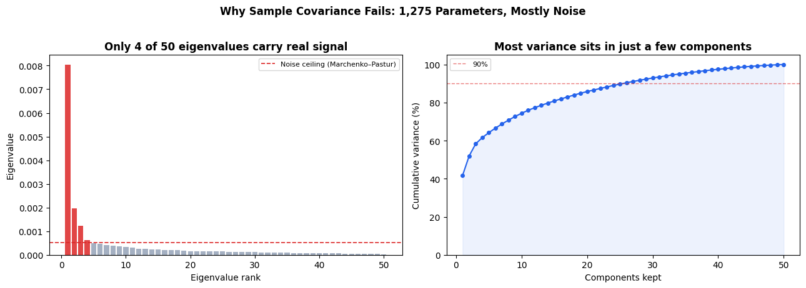

How covariance estimation choices drive portfolio outcomes under one common test design.
Dataset: 50 US large-cap stocks, daily data from 2018-01-02 to 2024-12-31
A mean-variance optimizer treats covariance estimates as ground truth. In practice, those estimates are noisy, and the optimizer amplifies that noise into concentrated positions.
With 50 assets and a one-year lookback, the sample covariance matrix contains 1,275 unique parameters estimated from limited history. The result is unstable risk forecasts and brittle allocations out of sample.
This chapter compares four estimators that address that issue from different angles:
Universe: 50 assets × 1759 days (2018-01-03 → 2024-12-30)
All data loaded ✓
Show code
# ── The Baseline Problem: Sample Covariance Is Mostly Noise ─cov_sample = returns.cov().valueseigvals = np.sort(np.linalg.eigvalsh(cov_sample))[::-1]q = N / Tsigma2 = np.mean(np.diag(cov_sample))lam_plus = sigma2 * (1+ np.sqrt(q))**2n_signal =int(np.sum(eigvals > lam_plus))fig, axes = plt.subplots(1, 2, figsize=(13, 4.5))colors = ['#dc2626'if v > lam_plus else'#94a3b8'for v in eigvals]axes[0].bar(range(1, N+1), eigvals, color=colors, alpha=0.85, width=0.8)axes[0].axhline(lam_plus, color='#dc2626', ls='--', lw=1.2, label='Noise ceiling (Marchenko–Pastur)')axes[0].set_xlabel('Eigenvalue rank'); axes[0].set_ylabel('Eigenvalue')axes[0].set_title(f'Only {n_signal} of {N} eigenvalues carry real signal', fontweight='bold')axes[0].legend(fontsize=8)cum_var = np.cumsum(eigvals) / eigvals.sum() *100axes[1].plot(range(1, N+1), cum_var, 'o-', color='#2563eb', ms=4, lw=1.5)axes[1].axhline(90, color='#dc2626', ls='--', lw=1, alpha=0.6, label='90%')axes[1].fill_between(range(1, N+1), cum_var, alpha=0.08, color='#2563eb')axes[1].set_xlabel('Components kept'); axes[1].set_ylabel('Cumulative variance (%)')axes[1].set_title('Most variance sits in just a few components', fontweight='bold')axes[1].legend(fontsize=8); axes[1].set_ylim(0, 105)plt.suptitle('Why Sample Covariance Fails: 1,275 Parameters, Mostly Noise', fontsize=12, fontweight='bold', y=1.02)plt.tight_layout(); plt.show()

How the Methods Differ
Each method makes a different assumption about what should be trusted in the covariance matrix.
Ledoit-Wolf Shrinkage blends the sample covariance with a structured target matrix at an analytically chosen weight: \[\hat{\Sigma}_{LW} = \alpha^* F + (1-\alpha^*) S\]
RMT Eigenvalue Cleaning keeps signal-dominant eigencomponents and shrinks the noisy tail of the spectrum: \[\hat{\Sigma}_{RMT} = \sum_{i\in\text{signal}} \lambda_i v_i v_i^\top + \bar{\lambda}_{\text{noise}} I_{\text{noise}}\]
DCC-GARCH Dynamic Covariance updates volatility and correlation through time: \[H_t = D_t\,R_t\,D_t\]
The tradeoff is straightforward: stronger structure reduces estimation noise, while higher flexibility can capture regime shifts but risks overfitting recent moves.
Show code
# ── M1: Ledoit-Wolf Shrinkage ──────────────────────────────from sklearn.covariance import LedoitWolfdef estimate_lw(returns_df):"""Shrink sample cov toward constant-correlation target. See M1 for full derivation."""return LedoitWolf().fit(returns_df.values).covariance_# ── M2: RMT Eigenvalue Cleaning ────────────────────────────def estimate_rmt(returns_df):"""Replace noise eigenvalues (below Marchenko-Pastur bound) with their mean.""" S = returns_df.cov().values T_, N_ = returns_df.shape q = N_ / T_ sigma2 = np.mean(np.diag(S)) lam_plus = sigma2 * (1+ np.sqrt(q))**2 eigvals, eigvecs = np.linalg.eigh(S) noise = eigvals <= lam_plus cleaned = np.where(noise, eigvals[noise].mean() if noise.any() else sigma2, eigvals)return eigvecs @ np.diag(cleaned) @ eigvecs.T# ── M3: Fama-French 3-Factor Model ─────────────────────────def estimate_ff3(returns_df):"""Σ = B Σ_f B' + D using market, SMB, HML factors. See M3 for full derivation.""" dates = returns_df.index.intersection(ff.index) excess = returns_df.loc[dates].subtract(rf.loc[dates], axis=0) F = ff.loc[dates, ['Mkt-RF','SMB','HML']].values X = np.column_stack([np.ones(len(dates)), F]) n = excess.shape[1] B, resid_var = np.zeros((n,3)), np.zeros(n)for i, col inenumerate(excess.columns): coefs = np.linalg.lstsq(X, excess[col].values, rcond=None)[0] B[i] = coefs[1:] resid_var[i] = np.var(excess[col].values - X @ coefs, ddof=1)return B @ np.cov(F, rowvar=False) @ B.T + np.diag(resid_var)# ── M4: DCC-GARCH (EWMA proxy) ─────────────────────────────def estimate_dcc(returns_df, lam=0.94):"""Exponentially-weighted covariance — captures time-varying risk (see M4 for full DCC-GARCH).""" X = returns_df.values - returns_df.values.mean(axis=0) C = np.cov(X[:30].T) iflen(X) >=30else np.eye(X.shape[1]) *1e-4for t inrange(len(X)): C = lam * C + (1-lam) * np.outer(X[t], X[t])return C + np.eye(X.shape[1]) *1e-8print("All four estimators defined ✓")
All four estimators defined ✓
Show code
def min_variance_portfolio(cov): n = cov.shape[0]; w0 = np.ones(n)/n res = minimize(lambda w: w @ cov @ w, w0, method='SLSQP', bounds=[(0,1)]*n, constraints=[{'type':'eq','fun':lambda w: w.sum()-1}], options={'ftol':1e-12,'maxiter':1000})return res.x if res.success else w0LOOKBACK, REBAL, MIN_HIST =252, 21, 252dates = returns.index[MIN_HIST:]n = returns.shape[1]strategies = ['Equal Weight Benchmark','Sample Covariance','Ledoit-Wolf Shrinkage','RMT Eigenvalue Cleaning','Fama-French 3-Factor Covariance','DCC-GARCH Dynamic Covariance']pv = {k: [1.0] for k in strategies}cw = {k: np.ones(n)/n for k in strategies}w_last = {}print("Running backtest...", end='', flush=True)for i, date inenumerate(dates): idx = returns.index.get_loc(date)if i % REBAL ==0: win = returns.iloc[idx-LOOKBACK:idx] cw['Equal Weight Benchmark'] = np.ones(n)/n cw['Sample Covariance'] = min_variance_portfolio(win.cov().values) cw['Ledoit-Wolf Shrinkage'] = min_variance_portfolio(estimate_lw(win)) cw['RMT Eigenvalue Cleaning'] = min_variance_portfolio(estimate_rmt(win)) cw['Fama-French 3-Factor Covariance'] = min_variance_portfolio(estimate_ff3(win)) cw['DCC-GARCH Dynamic Covariance'] = min_variance_portfolio(estimate_dcc(win)) day_ret = returns.iloc[idx].valuesfor k in strategies: pv[k].append(pv[k][-1] * (1+ cw[k] @ day_ret))w_last = {k: cw[k].copy() for k in strategies}portfolio_df = pd.DataFrame(pv, index=[dates[0]-pd.Timedelta(days=1)]+list(dates))print(f" ✓ ({len(dates)} days, {len(dates)//REBAL} rebalances)")
Running backtest... ✓ (1507 days, 71 rebalances)
Show code
fig, ax = plt.subplots(figsize=(12, 5))for k in strategies: lw =1.5if k !='Equal Weight Benchmark'else1.0 al =1.0if k !='Equal Weight Benchmark'else0.5 ax.plot(portfolio_df.index, portfolio_df[k], label=k, color=COLORS[k], lw=lw, alpha=al)ax.set_ylabel('Portfolio value ($1 start)')ax.set_title('Cumulative Performance Across Estimation Methods', fontweight='bold', fontsize=13)ax.legend(ncol=2, fontsize=9, loc='upper left')ax.grid(True, alpha=0.2)plt.tight_layout(); plt.show()def metrics(v): r = v.pct_change().dropna() ar, av = r.mean()*252, r.std()*np.sqrt(252)return {'Ann. Return (%)': ar*100, 'Ann. Vol (%)': av*100,'Sharpe': ar/av if av>0else0,'Max DD (%)': ((v/v.cummax())-1).min()*100}display(pd.DataFrame({k: metrics(portfolio_df[k]) for k in strategies}).T.round(2) .style.background_gradient(subset=['Sharpe'], cmap='RdYlGn') .background_gradient(subset=['Ann. Vol (%)'], cmap='YlOrRd_r'))
# ── Portfolio Concentration at Last Rebalance ──────────────hhi = {k: np.sum(w_last[k]**2) for k in strategies}fig, axes = plt.subplots(1, 2, figsize=(13, 4.5))axes[0].barh(list(hhi.keys()), list(hhi.values()), color=[COLORS[k] for k in strategies], alpha=0.85)axes[0].axvline(1/N, color='black', ls='--', lw=1, label=f'1/N = {1/N:.3f}')axes[0].set_xlabel('HHI (lower = more spread out)')axes[0].set_title('Portfolio Concentration', fontweight='bold')axes[0].legend(fontsize=8); axes[0].grid(True, axis='x', alpha=0.2)bp = axes[1].boxplot([w_last[k] for k in strategies], vert=False, labels=strategies, patch_artist=True, widths=0.5)for patch, k inzip(bp['boxes'], strategies): patch.set_facecolor(COLORS[k]); patch.set_alpha(0.6)axes[1].axvline(1/N, color='black', ls='--', lw=1)axes[1].set_xlabel('Portfolio weight')axes[1].set_title('Weight Distribution — Last Rebalance', fontweight='bold')axes[1].grid(True, axis='x', alpha=0.2)plt.tight_layout(); plt.show()print("HHI (1/N baseline = {:.4f}):".format(1/N))for k in strategies:print(f" {k:16s}{hhi[k]:.4f} ({np.sum(w_last[k]>0.01)}/{N} positions > 1%)")
All regularized estimators improve risk control versus raw sample covariance. That result is consistent across cumulative performance, rolling volatility, drawdowns, and concentration diagnostics.
Ledoit-Wolf and RMT are the most robust defaults in this dataset. They reduce variance from estimation noise without imposing strong economic structure.
Fama-French structure adds interpretability and diversification discipline. It performs best when factor assumptions are aligned with the assets under study.
DCC-GARCH adds regime sensitivity. It reacts faster during stress periods, but that flexibility requires tighter monitoring of model stability.
Method choice should match the dominant risk in your use case: static estimation noise, structural misspecification, or time-varying regime shifts.